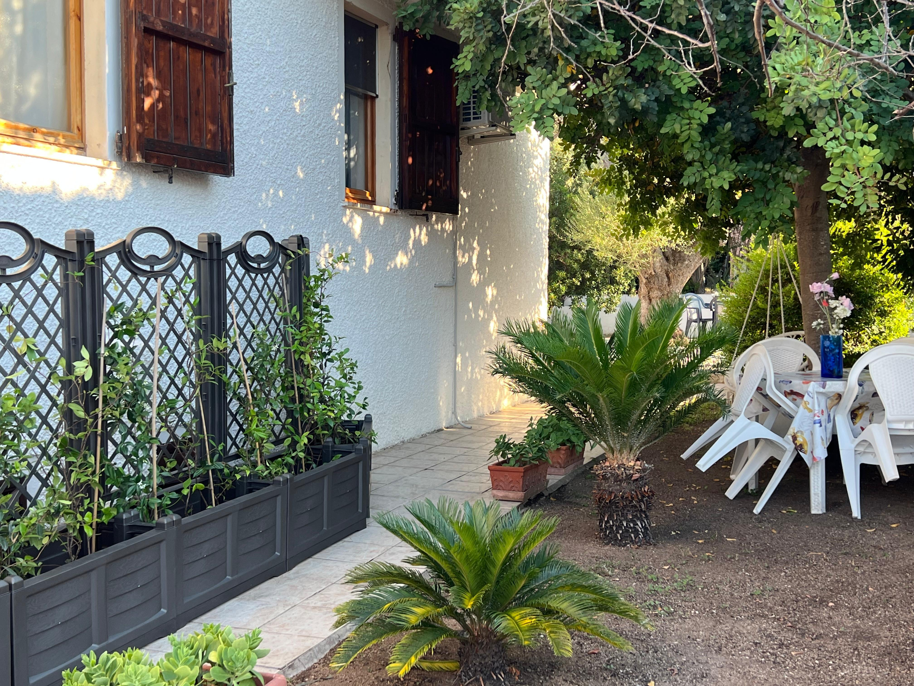
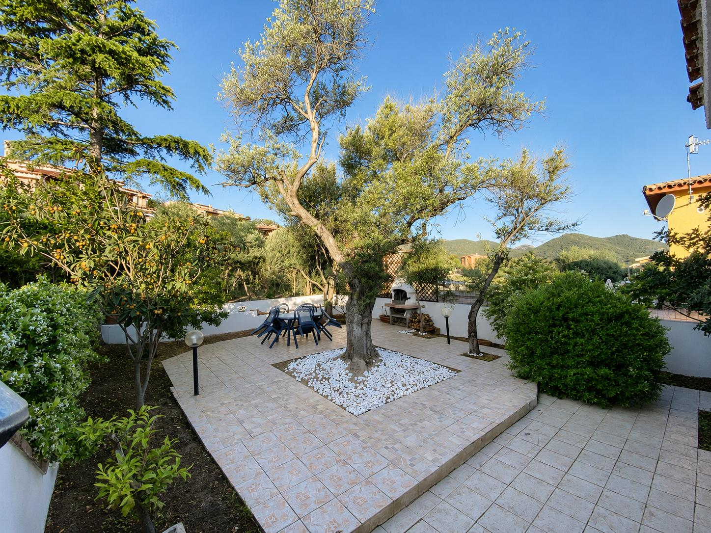
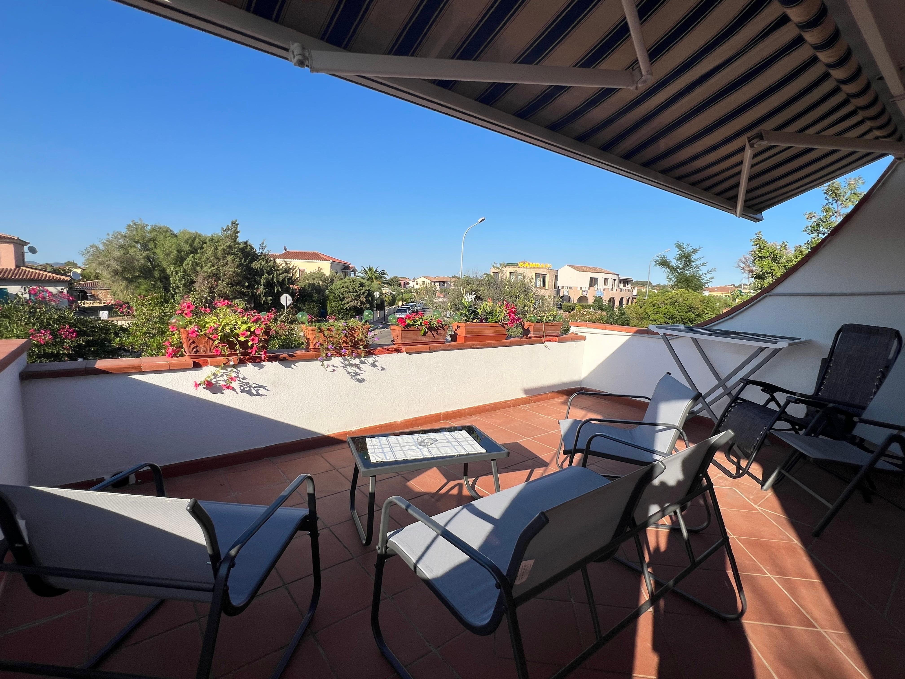
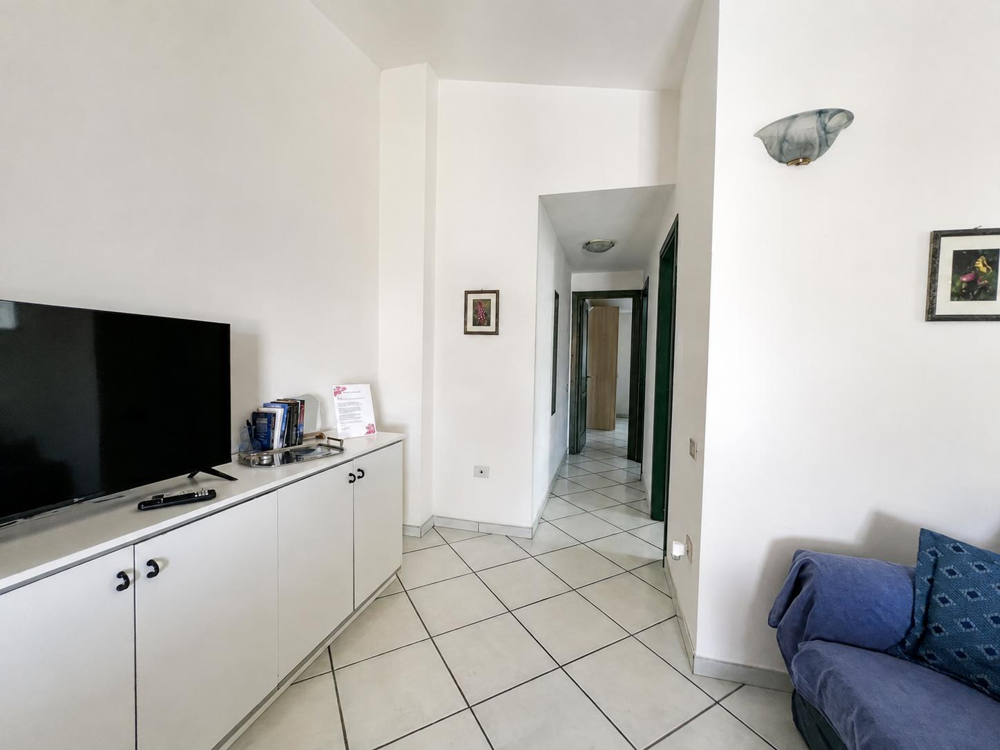
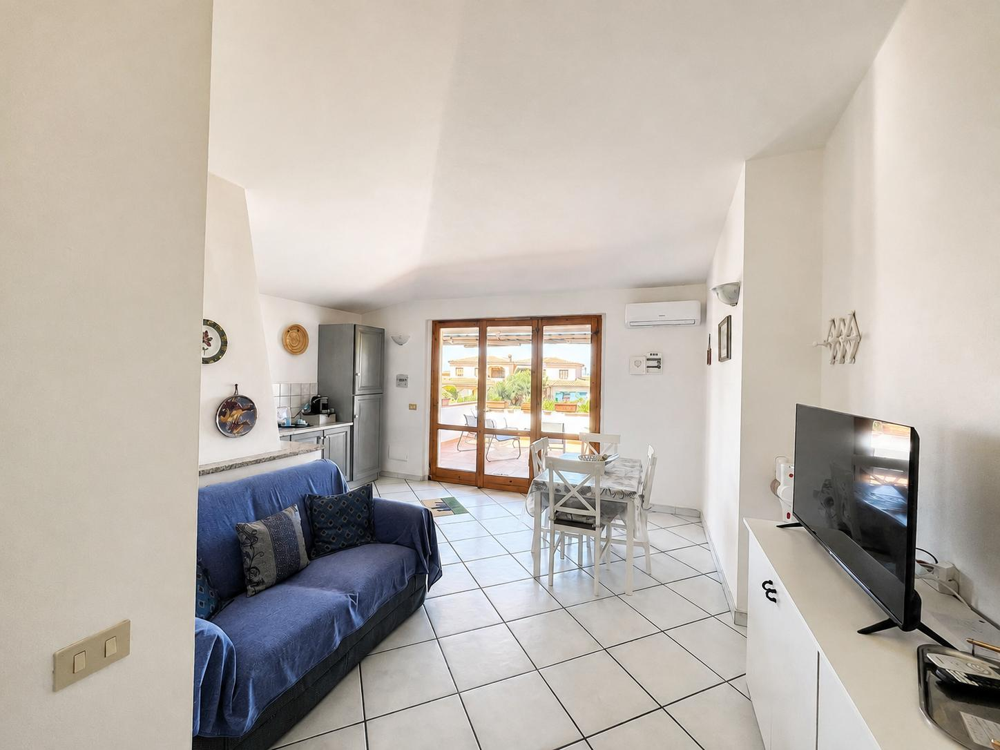
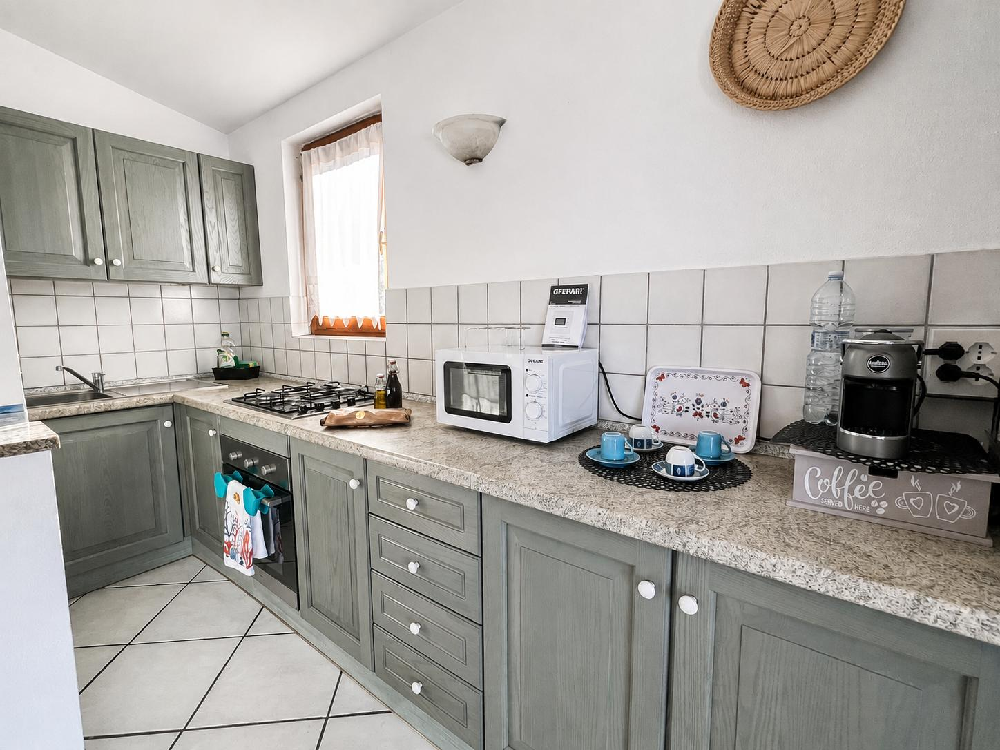

Onze voorzieningen
Alles wat u nodig heeft voor een aangename en ontspannen vakantie.
Wifi
Wifi beschikbaar voor onze gasten.
Volledig uitgeruste keuken
Alles wat u nodig heeft om u tijdens uw verblijf thuis te voelen.
Barbecue
Een ideale plek om buiten te barbecueën en te eten.
Grote tuin
Een ruime groene tuin met een hangmat om heerlijk te ontspannen.
Terras
Een terras met zitgelegenheid, perfect om buiten te ontspannen.
Parkeren
Parkeergelegenheid beschikbaar voor gasten.
Airconditioning
Ook op de warmste dagen geniet u van een aangename temperatuur.
Dicht bij de stranden
Een gunstige ligging om van de stranden rond San Teodoro te genieten.






